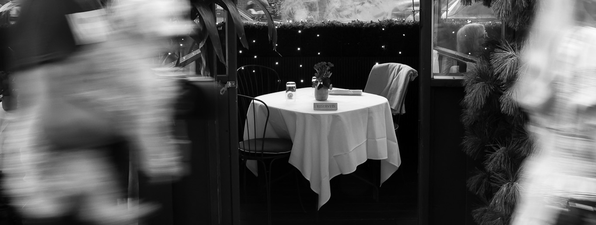

An archive of Manhattan dining sheds
New York city has grown accustomed to the past outdoor dining that emerged from the pandemic. The dining sheds have been adorned with fake flowers, painted logos, and warm fairy lights to give eaters a world away from the city sidewalk streets. Restaurant owners have spent their own money to install these characteristic installations. Now, the city asks for the dining sheds to be taken down.
Photographs by Isabel Yeajin Lee
